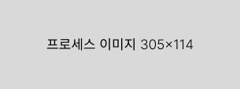

전시 배경
안녕하세요 프로젝트 브랜드 오너먼트입니다.
저희는 여러분과 함께하는 전시를 기획하고 있습니다.
참가 작가들과 관람객 그리고 그 영향을 받을 수많은 사람들까지, 각자 경험을 제공하고,
그 경험을 순환시킬 수 있는 장을 만들어 주는 것을 목적으로 합니다.
우리는 4학년입니다. 이제 곧 졸업을하죠. 졸업 작품을 만들었구요,
졸업작품을 만들때 참 다사다난 했어요. 돈도 시간도 노력도 아주 많이 들었죠. 교수님 눈치도 좀 보고요.
그리고 그 결과물은 길어야 일주일 정도 하고 끝나죠.
대부분의 졸업전시는 학교 이름 아래 결과물 위주의 이야기를 하고 있습니다,
작품을 이야기하는데 가장 중요한건 ‘과정’이라고 생각해요.
과정의 공유는 우리가 경험한 것들을 더욱 많이, 그리고 잘 보여줄 수 있습니다.
졸업 작품을 만들어 내기까지 작품에는 보여지지 않는 많은 과정이 있었다는걸 알고 있어요,
여러분의 과정을 졸업작품을 매개로 다양한 관람객에게 공유해주세요.
우리의 경험은 관람객의 경험이 되고, 그 관람객들의 경험은 다시 우리의 경험으로 돌아올 거예요.
2023
주요 타겟
우리의 타겟은 작가, 관람객, 그리고 영향을 받을 많은 사람들 입니다. 각 개인이 공유한 경험은 서로에게 순환됩니다.
01
참가자
1. 작품의 과정을 다시 한번 돌아보며 작가 본인의 작업 가치관과 생각을 공고히 합니다
사회에 나가기 전 본인의 가치관을 다시 한번 구축하는 것은 작가로서, 디자이너로서의 활동에 있어 중요한 양분이 됩니다.
제3자에게 작가의 생각을 전달하기 위한 이 작업은, 앞으로 본인의 작업에 대한 주장을 연습할 수 있는 계기가 됩니다.
2. 제3자의 피드백을 통해 작품을 보는 다양한 관점을 경험할 수 있습니다
나와 다른 시각을 경험하는 것은, 이후 다른 작업의 밑거름이 되어 줍니다.
02
관람객
1. 전시된 작품(결과물)이 도출되기 까지의 ‘과정’을 접하고 이해하며 사고의 폭을 넓힐 수 있습니다
타인의 작업과정은 개인의 작업을 더욱 깊고 다양한 시점에서 볼 수 있게 해줍니다.
2. 타인의 작업에 대한 피드백을 위해 본인의 가치관에 대해 한번 더 생각해 볼 수 있습니다
3. 관람객 중 미대 입시생(중/고등학생)에게 전공 선택과 진학을 위한 가이드가 되어줍니다
많은 입시생은 실질적 정보의 부족으로 전공선택에 어려움을 겪고 있습니다. 입시생들의 전공 이해를 돕는 계기가 됩니다.
03
영향을 받을
많은 사람들
1. 관람객들의 ‘바이럴’, ‘전시 관람 경험이 미친 영향을 바탕으로 한 작업’을 통해 또 다른 사람들에게 2차 공유와 순환이 발생합니다
2. 발생한 경험의 공유와 순환은 또 다른 곳으로, 또 다른 시간대로 끊임없이 공유되고 순환되길 바랍니다
참가자 프로세스
참가자는 어떤 작업을 해야하나요?
인터뷰 진행, 졸작과 관련된 소스 등 개별 인터뷰가 진행 될 예정입니다. 대면, 비대면, 메신저 이용 등 편한 방식으로 작품과 참가자의 과정에 대한 이야기를 오너먼트와 하게 됩니다. (작품은 전시 당일 가져와야 함)
